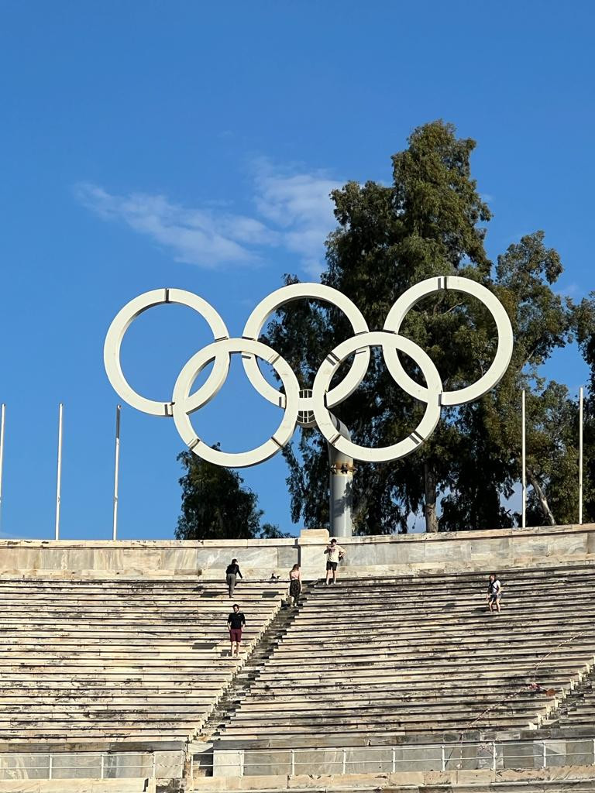

Bem-vindo ao site Ranking Olímpico de Medalhas. Este site oferece um ranking abrangente dos países com base nas medalhas que conquistaram nos Jogos Olímpicos. Os usuários podem buscar países específicos e filtrar os resultados por ano para obter informações detalhadas sobre a contagem de medalhas de cada nação participante. Nosso objetivo é fornecer uma interface amigável para explorar e analisar estatísticas de medalhas olímpicas.
Ranking Olímpico de Medalhas
Confira abaixo o ranking de medalhas filtrado por ano olímpico.